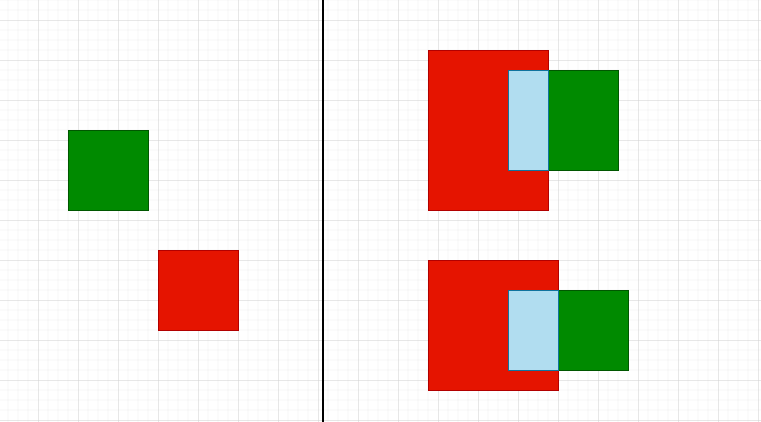
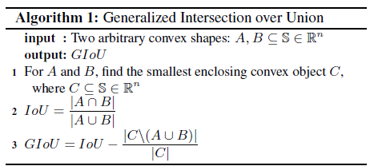
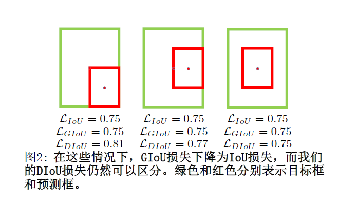
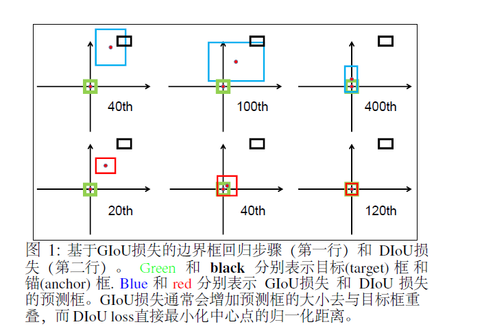
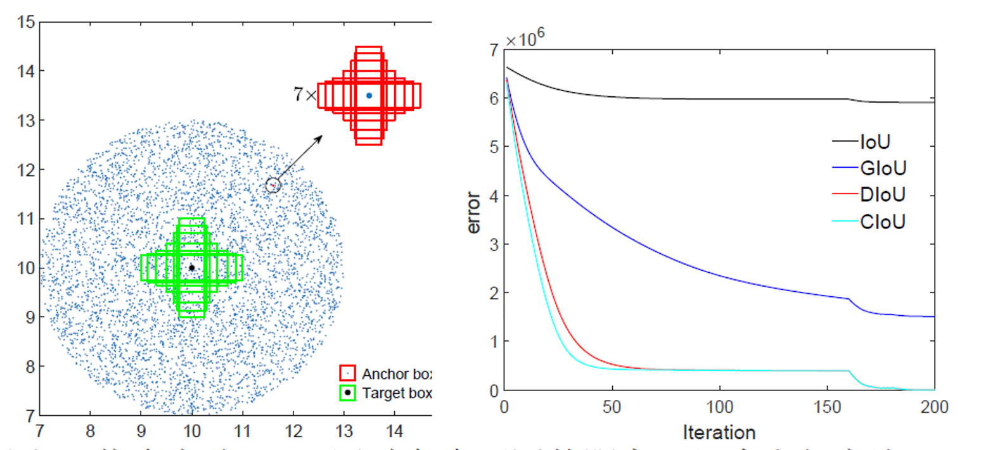
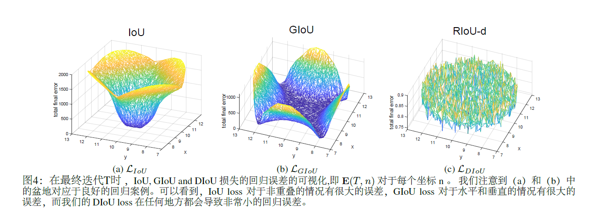
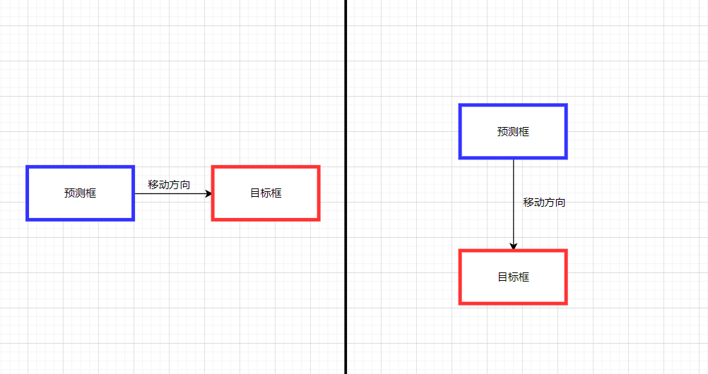

5.2 IoU深入解析
📘摘要
来源:https://github.com/Zzh-tju/DIoU/blob/master/README.md#introduction
边界框回归是目标检测的关键步骤，在现有方法中，虽然\(\ell_n\)-norm loss 被广泛用于边界框回归，但它不是针对评估指标量身定制的，即 Intersection over Union (IoU)。最近，已经提出了 IoU 损失和generalized IoU (GIoU) Loss作为评估IoU的指标 ，但仍然存在收敛速度慢和回归不准确的问题。在本文中，我们通过结合预测框和目标框之间的归一化距离来提出距离-IoU (DIoU) Loss，它在训练中的收敛速度比 IoU 和 GIoU Loss快得多。
此外，本文总结了边界框回归中的三个几何因素，即
重叠面积（overlap area）、中心点距离（central point distance）和高宽比（aspect ratio），在此基础上提出了完全 \(IoU (CIoU)\) 损失，从而促进了更快的收敛和更优的性能。通过将 \(DIoU 和 CIoU 损失\)结合到最先进的目标检测算法中，例如 YOLO v3、SSD 和 Faster RCNN，我们不仅在 IoU 指标方面而且在 GIoU 指标方面都获得了显着的性能提升。此外，DIoU 可以很容易地用于非最大抑制（NMS）作为标准，进一步促进性能提升。 注释:这里IoU指标方面和GIoU指标方面指的是在：目标检测精度测量(mAP值),IoU损失计算稳定性等一些方面。
目标检测是计算机视觉任务中的关键问题之一，几十 年来一直受到了广泛的研究关注 (Redmon et al. 2016; Redmon and Farhadi 2018; Ren et al. 2015; He et al. 2017; Yang et al. 2018; Wang et al. 2019; 2018). 通常，现有的目标检测方法可以分为： - 单阶段-检测，如YOLO系列 (Redmon et al. 2016; Red- mon and Farhadi 2017; 2018) 和SSD (Liu et al. 2016; Fu et al. 2017), - 两阶段检测，如 R-CNN系列检测 (Girshick et al. 2014; Girshick 2015; Ren et al. 2015; He et al. 2017), - 甚至是多阶段的检测, 像Cascade R-CNN (Cai and Vasconcelos 2018). 尽管存在这些不 同的检测框架，但边界框回归预测一个矩形框来定位目标对象仍然是其中关键步骤。
前言
本文主要是结合论文Distance-IoU Loss: Faster and Better Learning for Bounding Box Regression 进行对iou的解析学习。
IoU
IoU介绍
Intersection over Union (IoU)
在指标评估概述的小节有介绍过IoU,已经对IoU有了初步的认识(其实在yolov5项目中并不是简单的使用，而是用的后面介绍的CIoU )
计算公式：
\(\Large{I o U=\frac{\left|B \cap B^{g t}\right|}{\left|B \cup B^{g t}\right|} }\) (1)
- \(B^{g t}=\left(x^{g t}, y^{g t}, w^{g t}, h^{g t}\right)\) 是真实回归框(gt:ground-truth),
- \(B=(x, y, w, h)\) 是预测回归框。
IoU loss
计算公式:
\(\Large\mathcal{L}_{I o U}=1-\frac{\left|B \cap B^{g t}\right|}{\left|B \cup B^{g t}\right|}\) (2)
IoU Loss 优缺点分析
有明显的缺陷 IoU loss只在边界框有重叠时才能工作, 对于不重 叠的情况不会提供任何移动 ( 移动代表:预测框朝着目标框重叠的方向移动 ) 梯度。( 移动梯度,即无法衡量完全不相交的两个框所产生的的损失（iou固定为0），和两个不同形状的预测框可能产生相同的loss（相同的iou）分别如下图的左边和右边所示。)

GIoU
GIoU介绍
GIoU的设计初衷就是想解决IoU Loss存在的问题（预测框与真实框不相交时iou恒定为0），设计了一套Generalized Intersection over Union Loss。在IoU的基础上，GIoU还需要找到预测框和真实框的最小外接矩形，然后求出最小外接矩形减去两个预测框union的面积，具体算法流程如下：

GIoU loss
计算公式 :
\(\large\mathcal{L}_{G I o U}=1-I o U+\frac{\left|C-B \cup B^{g t}\right|}{|C|}\) (3)
其中 \(C\) 是覆盖 \(B\) 和 \(B^{g t}\) 的最小方框,由于引入了\(C\)，在不重叠的情况下，预测框也会向目标框移动。
GIoU 优缺点分析
GIoU Loss解决了IoU Loss在不相交情况的问题，在所有性能指标中都可以作为IoU的适当替代品，在目标检测任务中能够得到更高的准确率。
缺点：虽然GIoU可以缓解重叠情况下的梯度消失问题,但它仍有一些局限性。 (即无法衡量有包含关系时的框回归损失，如下图，三个回归框具有相同的GIoU Loss，但是显然第三个框的回归效果更好。)

IoU & GIoU 分析
首先，在本文上部分我们分析了关于原始的IoU损失和GIoU 损失的局限性。下面将通过模拟实验结果对边界框回归的过程进行进一步的解析。(补充说明: 为什么要进行模型实验? 因为仅仅从检测结果来分析边界框回归的过程很难，因为在不受控制的基准中的回归情况往往不全面比如：不同的距离(distances),不同的尺度(scales)和不同的长宽比(aspect ratios)。 相反，进行模拟实验，在实验中综合考虑回归情况，然后就可以很容易地分析给定损失函数的问题。)
模拟实验

在模拟实验中, 我们试图通过距离(distances), 尺度 (scales)和长宽比(aspect ratios)来覆盖边界框之间的大部分关系，如图3(a).所示。特别是, 我们选择7个单位框 (即每个框的面积为 1) ，具有不同的长宽比 (即 \(1: 4、1: 3、1: 2、1:1、2: 1、3:1 和 4: 1\)) 作为目 标框。在不失一般性的情况下，7个目标框的中心点被固定在\((10,10)\)。锚框均匀地分散在5000个点上。
\(({i})\) 距离: 在以半径为 3 的 \((10、10)\) 为中心的圆形区域内, 均匀选择5000个点, 放置7个尺度、7个长宽比的锚 框。在这些情况下，重叠和不重叠的方框都被包括。
\(({ii})\) 尺度:对于每个点, 锚框的面积分别设置为 \(0.5 、 0.67 、 0.75 、 1 、 1.33 、 1.5 和 2\)。
\(({iii})\) 长宽比: 对于给定的点和尺度, 采用 7 个长宽比, 即与目标框遵循相同的设置 (即 \(1: 4 、 1: 3 、 1: 2 、 1: 1 、 2: 1 、 3: 1 和 4: 1\)) 。所有 \(5000 \times 7 \times 7\) 锚箱都对应在每个目标框。综 上所述，总共有 \(1,715,000 =7 \times 7 \times 7 \times 5,000\) 个回归案例。

图3: 仿真实验: (a) 通过考虑不同的距离、尺度和长宽比, 采用了171.5万个回归案例。(b)回归误差和（即: \(\sum_{n} \mathbf{E}(t, n)\) ) 迭代次数为 \(\mathrm{t}\) 时不同损失函数的曲线。
然后通过给定损失函数 \(\mathcal{L}\) , 我们可以用梯度下降算法 来模拟每种情况下的边界框回归过程。对于预测框 \(B_{i}\) , 当前的预测可以通过:
\(B_{i}^{t}=B_{i}^{t-1}+\eta\left(2-I o U_{i}^{t-1}\right) \nabla B_{i}^{t-1},\) (4)
其中 \(B_{i}^{t}\) 是迭代 \(t\) 时的预测框, \(\nabla B_{i}^{t-1}\) 表示损失的梯度 \(\mathcal{L} w.r.t. B_{i}\) 迭代时 \(t-1\) , 和 \(\eta\) 是一个步 骤。值得注意的是，在我们的实现中，梯度乘以 \(2-I o U_{1}^{t-1}\) 去加速收敛。 边界盒回归的性能评估通过使用 \(\ell_{1} -norm.\) 对于每个损失 函数, 仿真模拟实验当达到迭代 \(T=200\) 时, 误差曲线如 \(图3(b).\) 所示。
IoU 和 GIoU 损失的限制

在图4中，我们可视化迭代T时对5000个分散点的最终回归误差。
- 从图4(a)中很容易看出，IoU损失只适用于与目标框重叠的情况。由于∇B总是0，没有重叠的锚框将不会移动。通过添加一个惩罚项见公式(3),
- GIoU 损失能够更好的缓解非重叠 案例的问题，如图所示4(b), 但GIoU的损失显著扩大了盆地，即GIoU的工作面积。但是，在水平方向和垂直方向的情况下，仍然很可能有很大的误差。这是因为GIoU损失中的惩罚项是用来最小化|C−A∪B|，但是C−A∪B的面积通常很小或为0（当两个盒子有包含关系时），然后GIoU几乎退化为IoU损失。只要以适当的学习速率运行足够的迭代GIoU 损失能收敛到很好的解决方案，但收敛速度却是非常慢。从几何上来说，从如图1所示的回归步骤来看，GIoU实际上增大了预测的框大小，用来和目标框重叠，然后IoU项用于预测框与目标框匹配，产生非常缓慢的收敛。
综上所述，在非重叠情况下，IoU损失收敛是糟糕的解决方式，而GIoU损失收敛速度较慢，特别是对于水平和垂直方向的框。在目标检测流程中，IoU和GIoU的损失都不能保证回归的准确性。
DIoU & CIoU
通过前面的IoU和GIoU的分析我们很自然会问以下问题： 1. 第一，是否可以直接最小化预测框和目标框之间的归一化距离，以实现更快的收敛？ 2. 第二，当与目标框有重叠甚至包含时，如何使回归 更准确、更快？
DIoU loss
Distance-IoU 损失：更快更好的边界框回归损失,一般来说, \(IoU-based\) 损失可以定义为
\(\mathcal{L}=1-I o U+\mathcal{R}\left(B, B^{g t}\right),\) (5)
其中 \(\large\mathcal{R}\left(B, B^{g t}\right)\) 是 预测框 B 和目标框 \(B^{g t}\) 的惩罚项。 通过设计适当的惩罚项, 在本节中, 我们提出了 DIoU 损失和CIoU损失来解答上述两个问题。
为了回答第一个问题, 我们提出将两个边界框的中心点 之间的标准化距离最小化，惩罚项可以定义为
\(\large\mathcal{R}_{D I o U}=\frac{\rho^{2}\left(\mathbf{b}, \mathbf{b}^{g t}\right)}{c^{2}},\) (6)
其中 \(\mathbf{b}\) 和 \(\mathbf{b}^{g t}\) 分别代表 B 和 \(B^{g t}\) 的中心点。 \(\rho(\cdot)\) 为欧氏距离, \(\mathrm{C}\) 是覆盖两个盒框的最小封闭框的对角线长度。\(DIoU\)损失函数可以定义为:
\(\large\mathcal{L}_{D I o U}=1-I o U+\frac{\rho^{2}\left(\mathbf{b}, \mathbf{b}^{g t}\right)}{c^{2}} .\) (7)
如图5所示, \(DIoU\)损失的惩罚项直接使两个中心点之间的距离最小化, 而 \(\mathrm{GIoU}\) 损失的目的是减少 \(C-B \cup B^{g t}\) 的面积。

IoU和GIoU损失比较
提出的DIoU损失 继承IoU和GIoU损失的一些属性 1. \(DIoU损失\)对回归问题的尺度仍夗是不变的 2. 与\(GIoU损失\)类似, \(DIoU损失\)可以在与目标框不重叠时为边界框提供移动方向。 3. 当两个边界框完美匹配时, \(\mathcal{L}_{I o U}=\mathcal{L}_{G I o U}=\mathcal{L}_{D I o U}=0 .\) 当两个框都很远时, \(\mathcal{L}_{G I o U}=\mathcal{L}_{D I o U} \rightarrow 2 .\)
\(DIoU损失\)比\(IoU损失\)和\(GIoU损失\)有几个优点, 可以通过仿真实验进行评估。 1. 如图1和图3所示, \(DIoU损失\)可以直接最小化两个框的距离, 因此收敛速度比\(GIoU损失\)要快得多。 2. 对于两个框是包含关系的情况(图2), 或在水平和垂直方向的情况(图6)下, \(DIoU损矢\)可以回归非常快, 而 \(\mathrm{GIoU}\) 损失几乎退化为 \(\mathrm{IoU}损失\), 即 \(|C-A \cup B| \rightarrow 0 .\)

Complete IoU Loss
接着我们回答了第二个问题，提出了边界框回归的良好 损失应该要考虑三个重要的几何因素, 即重叠面积、中心点距离和长宽比。通过统一坐标, \(IoU损失\)考虑了重叠区域, 而\(GIoU损失\)严重依赖于\(IoU损失\)。我们提出的 \(DIoU损失\)旨在同时考虑边界框的重叠面积和中心点距离。然而, 边界框的长宽比的一致性也是一个重要的几何因素。 因此，基于 \(DIoU损失\)，通过添加长宽比的一致性来 提出\(CIoU损失\):
\(\large\mathcal{R}_{C I o U}=\frac{\rho^{2}\left(\mathbf{b}, \mathbf{b}^{g t}\right)}{c^{2}}+\alpha v,\) (8)
其中 \(\alpha\) 是一个正的权衡参数, \(v\)衡量长宽比的一致性。
\(\large{v=\frac{4}{\pi^{2}}\left(\arctan \frac{w^{g t}}{h^{g t}}-\arctan \frac{w}{h}\right)^{2} .}\) (9)
则损失函数可以定义为:
\(\large\mathcal{L}_{C I o U}=1-I o U+\frac{\rho^{2}\left(\mathbf{b}, \mathbf{b}^{g t}\right)}{c^{2}}+\alpha v\) (10)
\(\large\alpha=\frac{v}{(1-I o U)+v}\) (11)
通过重叠面积因子给予更高的优先回归, 特别是对于非重叠情况。 最终, \(CIoU损失\)的优化与 \(DIoU损失\)的优化相同, 除 了 \(v w.r.t. w\) 的梯度应该指定 \(\mathrm{w}\) 和\(h\)。
\(\large\begin{array}{l} \frac{\partial v}{\partial w}=\frac{8}{\pi^{2}}\left(\arctan \frac{w^{g t}}{h^{g t}}-\arctan \frac{w}{h}\right) \times \frac{h}{w^{2}+h^{2}}, \\ \frac{\partial v}{\partial h}=-\frac{8}{\pi^{2}}\left(\arctan \frac{w^{g t}}{h^{g t}}-\arctan \frac{w}{h}\right) \times \frac{w}{w^{2}+h^{2}} . \end{array}\) (12)
主导器 \(w^{2}+h^{2}\) 通常是一个很小的值对于 \(h\) 和 \(w\) 的范 围在 [0,1] , 这很可能会产生梯度爆炸。因此在我们的实现, 主导器 \(w^{2}+h^{2}\) 被移除, 将步长 \(\frac{1} {w^{2}+h^{2}}\) 替换为 \(1\), 梯度方向仍然与公式(12)一致。
NMS(Non-Maximum Suppression)
介绍
NMS是大多数目标检测算法的最后一步，其中删除了冗余的检测框当它与最高分框的重叠超过一个阈值。 Soft-NMS (Bodla et al. 2017) 用连续函数w.r.t.惩罚相邻框的检测分数IoU，产生比原始NMS产生更柔和大和更强大的抑制。IoU-Net (Jiang et al. 2018) 提出了一个新的网络分支来预测定位置信度来指导NMS。最近，自适应NMS（Liu，Huang，和Wang 2019）和Softer-NMS（He et al. 2019）被提出分别研究适当的阈值策略和加权平均策略。 在本工作中，简单将DIoU作为原始NMS的标准, 在抑制冗余框时，同时考虑边界框的重叠面积和两个中心点之间的距离。
DioU-NMS
\(Non-Maximum Suppression using DIoU\)
在原始的NMS中, IoU指标用于抑制吕余的检测框, 其 中重叠区域是唯一的因素, 对于有遮挡的情况，往往会 产生错误的抑制。 我们在这项工作中建议 \(DIoU\) 是 \(NMS\) 的更好标准，因为在抑制标准中不仅应考虑重叠 \(DIoU-NMS\) 被正式定义为:
\(s_{i}=\left\{\begin{array}{l} s_{i}, I o U-\mathcal{R}_{D I o U}\left(\mathcal{M}, B_{i}\right)<\varepsilon, \\ 0, \quad I o U-\mathcal{R}_{D I o U}\left(\mathcal{M}, B_{i}\right) \geq \varepsilon, \end{array}\right.\) (13)
其中框 \(B_{i}\) 被去除通过同时到考虑\(IoU\) 和两个框中心点 的距离。 \(s_{i}\) 是分类得分和 \(\varepsilon\) 是\(NMS\) 阈值。我们认为两 个中心点较远的框可能会定位不同的物体, 而不应该被 删除。此外 \(DIoU-NMS\) 是非常灵活, 仅仅是几行的代码就可以集成到任何目标检测管道中。
小结
在本文中，主要的介绍用于边界框回归的 \(DIoU损失\)和 \(CIoU 损失\) 和 用于抑制冗余检测框的\(DIoU-NMS。\) 通过直接最小化两个中心点的归一化的距离， \(DIoU 损失\)可以比\(GIoU 损失\)实现更快的收敛。 此外\(CIoU损失\)考虑了三个几何属性(即 重叠区域、中心点距离 和 长宽比),促进了 更快的收敛和更优的性能。

参考文章
- https://github.com/Zzh-tju/DIoU/blob/master/README.md#introduction
- IoU: https://arxiv.org/pdf/1608.01471.pdf
- GIoU: https://giou.stanford.edu/GIoU.pdf
- DIoU: https://arxiv.org/pdf/1911.08287.pdf